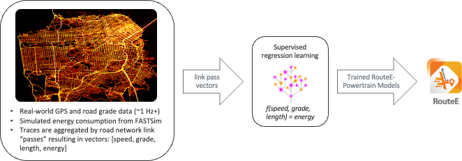
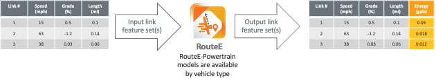

What is RouteE?#
RouteE-Powertrain is a Python package that allows users to work with a set of pre-trained mesoscopic vehicle energy prediction models for a varity of vehicle types. Additionally, users can train their own models if "ground truth" energy consumption and driving data are available. RouteE-Powertrain models predict vehicle energy consumption over links in a road network, so the features considered for prediction often include traffic speeds, road grade, turns, etc. Common applications of RouteE-Powertrain are energy-aware ("eco") routing (like RouteE-Compass), energy accounting in mesoscopic simulations, and range estimation (especially for EVs). The diagrams below illustrate the logic and data flows for training custom RouteE-Powertrain models and performing prediction with previously trained models.
Training#

Training new RouteE-Powertrain models requires a set of link aggregate driving data with energy consumption on each link in the road network. Often this data comes from high-frequency GPS or telematics data collected by dedicated loggers or from connected vehicles that are always streaming telematics data. The energy consumption can either be vehicle reported/measured or simulated using a powertrain simulation software like FASTSim.
Prediction#

In application, trained RouteE-Powertrain models expect link features as inputs and return predicted energy consumption for a particular vehicle over a link with the particular feature set. The RouteE developers maintain a separate repository for previously trained RouteE-Powertrain models, available for prediction "off the shelf". To see which models are available you can use the pt.list_available_models() function:
import routee.powertrain as pt
pt.list_available_models()
This returns a list of ModelId objects. For more detail (including feature names, errors, and powertrain type), use query_available_models:
# Query all available Toyota models
results = pt.query_available_models(make="toyota")
# Query with multiple filters
results = pt.query_available_models(make="chevrolet", model="bolt", year=2017)
To predict with any of these models you can use the pt.load_model() function. Pass the registry path string (or a ModelId object) to load a model:
camry = pt.load_model('toyota/camry_ice/2016/rf_c3326385/v1')
bolt = pt.load_model('chevrolet/bolt_bev/2017/rf_c3326385/v1')
Model Registry#
Model discovery and retrieval go through a ModelRegistry abstraction. By default, models are fetched from a public HuggingFace Hub repository — anonymously, with downloads cached under ~/.cache/huggingface so loading the same model twice only hits the network once. Set the ROUTEE_REGISTRY_BACKEND environment variable to read a local directory tree instead, or to fall back to the S3 bucket (pip install "routee.powertrain[s3]", since boto3 is no longer installed by default).
Setting ROUTEE_HF_REVISION to a commit sha pins the entire library — every model and the index — to an exact state, which is the simplest way to make a downstream analysis reproducible.
A ModelId is structured as <make>/<vehicle_slug>/<year>/<config_slug>/v<N>. Both slugs are derived from the model's metadata: the vehicle_slug is the model name plus the coarse powertrain family (e.g. camry_ice, bolt_bev, volt_phev — both PHEV operating modes collapse to one phev family), and the config_slug disambiguates multiple trained configurations for the same vehicle as <architecture>_<variant?>_<feature_hash> (e.g. rf_c3326385, ngb_stochastic_96224f1f) — so different architectures, feature sets, or variant labels each get a distinct slug automatically. Omit the trailing v<N> to load the latest version. The version-less part (<make>/<vehicle_slug>/<year>/<config_slug>) is a model's ModelKey, exposed on any loaded or trained model as model.key.
For a step-by-step walkthrough of training a new model and writing it into the registry layout, see Publishing a Model.
Variable |
Default |
Meaning |
|---|---|---|
|
|
Backend to use: |
|
|
HuggingFace repo holding the model library |
|
|
HuggingFace repo type: |
|
(default branch) |
Branch, tag, or commit sha to read |
|
(anonymous) |
Hub access token; unset reads public repos |
|
|
S3 bucket name |
|
|
AWS region |
|
|
S3 key prefix |
|
|
On-disk schema version |
|
(bundled registry) |
Filesystem root for the local backend |
query_available_models supports fuzzy string matching by default (fuzzy=True, fuzzy_threshold=80) and accepts the additional filters powertrain_type, fuel_type, drivetrain, engine, trim, feature_names, and custom_filters. Pass version_strategy="all" to see every version of every model instead of just the latest.